JAIN DENTAL CLINIC
안녕하세요.
자인치과입니다.
자연치아를 지키기 위한 노력, 그리고 치료 후의 편안함까지 생각하는 진료.
자인치과의 진료는 단순히 치료를 끝내는 데서 멈추지 않습니다. 진단 단계부터 치료 이후의 사용감, 교합의 안정성, 자연스러운 미소까지 고려하여 환자분들이 오래 편안하게 사용할 수 있는 치료를 지향합니다.
구강악안면외과 전문의의 섬세한 진단과 수술적 전문성을 바탕으로, 치료의 시작부터 이후의 회복과 유지까지 더 깊이 고민합니다.
JAIN DENTAL CLINIC
자인치과의 특별함
5D 정밀분석 프로그램
자인치과의 5D 정밀분석 프로그램은
턱관절, 임플란트, 보철치료,
전체 교합 상태까지 종합적으로 분석하는
자인치과만의 특화 진단 시스템입니다.
특히 임플란트나 보철치료는 치료가 끝난 뒤의
사용감과 유지력이 중요합니다.
교합이 정확하게 맞지 않으면 특정 치아나
보철물에 과도한 힘이 집중될 수 있고,
이는 보철물의 수명이나 턱관절 불편감과도
연결될 수 있습니다.
자인치과는 디지털 안면 분석, 3D CT, 교합 분석 장비 등을
활용해 환자의 구강 상태를 다각도로 분석합니다.
치아의 형태뿐 아니라 씹는 힘의 균형과 턱관절 안정성까지 고려한 치료 계획을 수립합니다.
보이는 치아만이 아니라,
보이지 않는 교합과 턱관절까지
분석합니다.
자인치과는 치료 전 정밀 진단을 통해
치아, 잇몸, 턱관절, 얼굴 구조, 교합 밸런스를
함께 확인하고 환자에게 필요한 치료 방향을
보다 세밀하게 제안합니다.
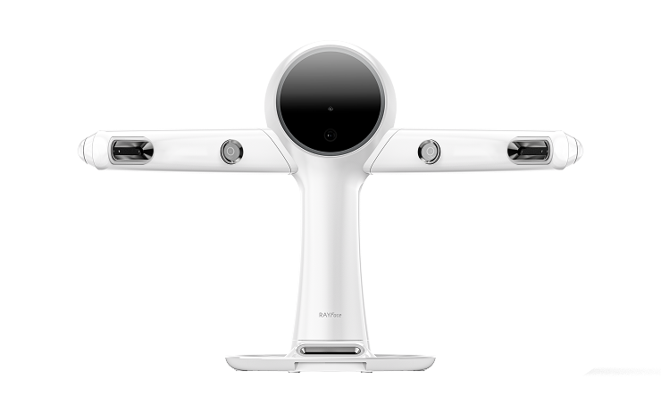
얼굴 구조까지 함께 보는 3D 안면 분석 장비
RAYFace는 환자의 얼굴을 빠르게 스캔하여 얼굴 윤곽, 입술 라인, 치아 위치, 안면 비율 등을 입체적으로 분석하는 장비입니다.
기존의 2D 사진이나 구강 스캔만으로는 확인하기 어려운 얼굴과 치아의 관계를 시각적으로 파악할 수 있어,
치료 전후 변화 예측과 상담에 도움을 줍니다.
특히 치아교정, 심미보철, 임플란트, 앞니 치료처럼 치아의 기능뿐 아니라
얼굴과 어울리는 자연스러운 미소가 중요한 치료에서 활용도가 높습니다.
정밀 진단 범위
- 3D CT 기반 치아·턱뼈 구조 입체 분석
- 잇몸뼈의 양과 폭, 신경 위치 확인
- 임플란트 식립 위치와 각도 사전 계획
- 교정 치료를 위한 골격·치열 관계 분석
- 턱관절·보철 치료 계획에 필요한 구조 데이터 확인
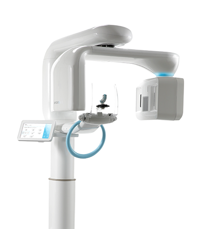
구강 구조를 입체적으로 확인하는 정밀 진단 장비
RAYFace Panorama는 파노라마 촬영, 세팔로 촬영, 3D CT, Face Scan 등 다양한 기능을 결합한 디지털 진단 장비입니다.
치아와 잇몸뼈, 턱뼈 구조, 신경 위치 등을 입체적으로 확인할 수 있어 임플란트, 사랑니 발치, 교정,
턱관절 진단 등 다양한 진료에서 보다 세밀한 치료 계획을 세울 수 있습니다.
특히 임플란트 치료에서는 뼈의 양과 폭, 신경과의 거리, 식립 위치 등을 정확히 확인하는 것이 중요합니다.
자인치과는 이러한 데이터를 바탕으로 환자에게 맞는 안전하고 정밀한 치료 방향을 계획합니다.
정밀 진단 범위
- 3D CT 기반 치아·턱뼈 구조 입체 분석
- 잇몸뼈의 양과 폭, 신경 위치 확인
- 임플란트 식립 위치와 각도 사전 계획
- 교정 치료를 위한 골격·치열 관계 분석
- 턱관절·보철 치료 계획에 필요한 구조 데이터 확인
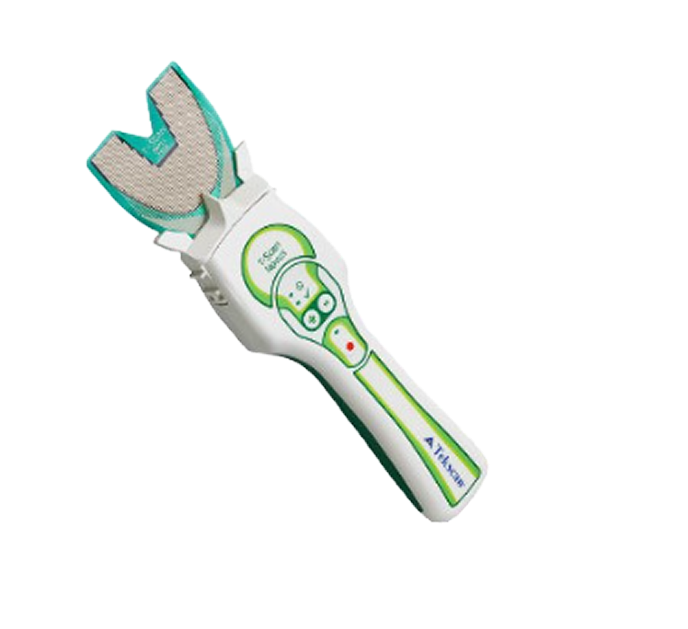
씹는 힘의 균형을 수치로 분석하는 교합 분석 장비
T-Scan은 치아가 어떻게 맞물리는지, 어느 치아에 힘이 집중되는지를 수치와 그래프로
확인할 수 있는 디지털 교합 분석 장비입니다.
기존에는 환자의 느낌이나 교합지 표시만으로 확인하던 부분을 시간 순서, 접촉 강도,
힘의 분포까지 정량적으로 분석할 수 있어 보다 정밀한 교합 진단이 가능합니다.
특히 보철치료나 임플란트 치료 후 교합이 맞지 않으면 특정 치아나 보철물에 과도한 힘이
전달되어 불편감이 생기거나 보철물의 수명에도 영향을 줄 수 있습니다.
자인치과는 T-Scan을 통해 치료 전후의 교합 변화를 확인하고,
환자가 치료 후에도 편안하게 씹고 사용할 수 있도록 교합 밸런스를 세밀하게 조정합니다.
정밀 진단 범위
- 치아 접촉 순서와 교합 시간 분석
- 치아별 교합력과 힘의 분포 확인
- 특정 치아나 보철물에 집중되는 과부하 분석
- 임플란트·보철 치료 후 교합 안정성 평가
- 턱관절, 이갈이, 교합 불균형 진단에 활용
이런 분께 필요합니다
- 보철치료 후 씹을 때 불편함이 있는 분
- 임플란트 후 특정 부위에 힘이 몰리는 느낌이 있는 분
- 턱관절 통증이나 이갈이가 있는 분
- 교정 중 교합 변화가 걱정되는 분
- 전체적인 교합 상태를 정밀하게 확인하고 싶은 분
JAIN DENTAL CLINIC
의료진 소개
조현준 대표 원장
- 고려대학교 치기공학과 입학
- 전북대학교 치의학전문대학원 졸업
- 전북대학교병원 구강악안면외과 수련 (치과 전문의 자격 취득)
- SCI급 논문 게재 및 박사과정 수료
- 전라남도 도서지역 출장진료 참여 (공중보건의)
- 전주 대자인병원 치과 과장 역임
김민진 부원장
- 전북대학교 치과대학 졸업
- OIC laminate 세미나 수료
- Bioclear korea 과정 수료
- 턱관절 장애 교육연구회 턱관절 세미나 수료
- 측두 하악 관절 자극 요법 인증 기관 교육 이수
- 필리핀 municipality of murcia 의료봉사 등 다수 국내, 해외 의료봉사 참여
- OIC 근관 치료 세미나 수료
- OIC 레진 수복 세미나 수료
JAIN DENTAL CLINIC
자인치과 치료안내
JAIN DENTAL CLINIC
임플란트
빠진 치아 자리에 인공치근(뿌리)을 심고, 그 위에 보철물을 올려
자연치아처럼 음식을 씹을 수 있게 돕는 치료입니다.
자인치과에서는 구강악안면외과 전문의의 진료와 정밀 의료장비 기반의
분석 시스템으로 안전하고 정확한 임플란트 치료를 제공합니다.
고난도 임플란트까지
안전하게 시술
구강악안면외과 전문의가 잇몸뼈 상태, 신경 위치, 치아 상실 부위 등을 면밀히 분석하여 뼈이식이나 재수술이 필요한 경우까지 안전하게 치료 계획을 수립합니다.
3차원 CT 등 정밀 의료
장비로 정확하게 진단
3D CT와 다양한 정밀 진단 장비를 통해 잇몸뼈, 신경, 혈관, 교합 상태를 입체적으로 확인하여 보다 정교한 임플란트 계획을 세웁니다.
구강악안면외과 전문의가
직접 진단 및 시술
진단부터 수술계획, 시술, 사후 관리까지 전문의가 직접 체계적으로 진행하여 고난도 케이스에서도 신뢰도 높은 치료를 제공합니다.
개인 구강환경에 맞는
맞춤 임플란트 시술 가능
잇몸 상태, 뼈의 양, 전신건강, 심미적 요구까지 종합적으로 고려하여 환자 개개인에 맞는 맞춤형 임플란트 치료를 제안합니다.
즉시 임플란트란?
발치와 임플란트 식립을 한 번에 진행 할 수 있어 치료 기간과
여러 번 내원해야 하는 부담을 줄이는 데 도움이 됩니다.
즉시 임플란트 치료 대상
즉시 임플란트는 잇몸뼈 상태와 치아 조건에 따라 진행 가능 여부가
달라질 수 있어, 충분한 정밀 진단 후 계획하는 것이 중요합니다.
- 1 발치 후 빠른 임플란트 진행을 원하는 경우
- 2 잇몸뼈 상태가 비교적 안정적인 경우
- 3 치아 손상이나 흔들림으로 발치가 필요한 경우
- 4 치아 공백 기간을 줄이고 싶은 경우
즉시 임플란트의 장점
-
1 치료기간 단축발치와 임플란트 식립을 한 번에 진행할 수 있어 전체 치료 기간 부담을 줄일 수 있습니다.
-
2 내원 횟수 감소치료 과정을 줄여 여러 번 병원을 방문해야 하는 부담을 덜 수 있습니다.
-
3 치아 공백 기간 최소화발치 후 빈 공간으로 인한 불편함을 줄이는 데 도움이 될 수 있습니다.
즉시 임플란트 치료 과정
구강 상태와 잇몸뼈를 확인하여 즉시 임플란트 가능 여부를 진단합니다.
문제가 있는 치아를 꼼꼼하게 발치하며 잇몸 상태를 함께 확인합니다.
발치 후 가능한 경우 바로 임플란트를 식립하여 치료를 진행합니다.
임플란트가 안정적으로 자리 잡을
수 있도록 회복 과정을 거친 뒤
보철 치료를 진행해 마무리합니다.
3D 컴퓨터 분석 임플란트란?
3D CT 촬영과 컴퓨터 분석을 통해 잇몸뼈, 신경 위치 등을 확인한 뒤
보다 정밀하게 계획하여 진행하는 임플란트 치료입니다.
3D 컴퓨터 분석 임플란트 치료 대상
- 1 신경과 가까운 위치에 임플란트 식립이 필요한 경우
- 2 여러 개의 임플란트를 빠르고 안정적으로 식립해야
하는 경우 - 3 잇몸뼈가 좁거나 얇은 부위에 식립이 필요한 경우
- 4 출혈 부담을 줄이고 빠른 식립이 필요한 경우
3D 컴퓨터 분석 임플란트의 장점
-
1 정밀한 치료 계획 가능구강 구조를 입체적으로 분석하여 보다 세밀한 계획 수립에 도움이 됩니다.
-
2 개인별 맞춤 치료 진행치아와 잇몸 상태를 고려해 개인별 맞춤 치료 방향을 설정할 수 있습니다.
-
3 안정적인 식립 도움신경 위치와 잇몸뼈 상태를 고려하여 안정적인 식립 계획에 도움이 됩니다.
-
4 치료 부담 감소 도움불필요한 절개 범위를 줄이는 방향으로 계획될 수 있어 회복 부담 감소에 도움이 될 수 있습니다.
3D 컴퓨터 분석 임플란트 치료 과정
구강 구조와 잇몸뼈 상태를 입체적으로 확인합니다.
신경 위치와 식립 방향 등을 분석하여 치료 계획을 세웁니다.
분석 데이터를 바탕으로 임플란트를 식립합니다.
안정적인 회복 과정을 거친 뒤 보철 치료를 진행합니다.
상악동거상술 임플란트란?
위쪽 어금니 부위 잇몸뼈가 부족한 경우, 상악동 공간을 확보하고 뼈이식을 함께
진행하여 임플란트 식립 기반을 만드는 치료입니다.
치아를 오래 상실했거나 잇몸뼈가 얇아진 경우 상악동과의 거리가 가까워져, 임플란트
식립 전 충분한 뼈를 확보하는 과정이 필요할 수 있습니다.
상악동거상술 임플란트 치료 대상
- 1 위쪽 어금니 부위 잇몸뼈가 부족한 경우
- 2 잇몸뼈 흡수로 임플란트 식립이 어려운 경우
- 3 오래전 치아를 상실해 뼈가 얇아진 경우
- 4 안정적인 임플란트 식립 기반이 필요한 경우
상악동거상술 임플란트의 장점
-
1 부족한 잇몸뼈 보완가능잇몸뼈가 부족한 경우에도 임플란트 식립 가능 범위를 넓히는 데 도움이 됩니다.
-
2 안정적인 식립 기반 형성충분한 뼈를 확보하여 보다 안정적인 임플란트 식립에 도움이 됩니다.
-
3 개인 상태에 맞춘 치료 가능상악동과 잇몸뼈 상태를 고려해 맞춤형 치료 계획이 가능합니다.
-
4 위쪽 어금니 임플란트 개선 도움식립이 어려웠던 위쪽 어금니 부위 치료 방향을 넓히는 데 도움이 될 수 있습니다.
상악동거상술 임플란트 치료 과정
상악동 위치와 잇몸뼈 상태를 꼼꼼하게 확인합니다.
상악동 막을 조심스럽게 들어 올려 식립 공간을 확보합니다.
필요 시 뼈이식을 진행하고 임플란트를 식립합니다.
잇몸과 뼈가 안정적으로 회복된 후 보철 치료를 진행합니다.
JAIN DENTAL CLINIC
심미치료
자연스러운 미소와 조화로운 인상을 완성하는 심미치료는
단순히 치아를 하얗게 만드는 치료가 아닌,
치아의 색상과 형태, 배열, 잇몸 라인까지 고려하여 전체적인 구강 밸런스를 개선하는 치료입니다.
자인치과에서는 환자 개개인의 치아 상태와 얼굴 비율, 웃을 때 보이는
치아 라인까지 세심하게 분석하여 과하지 않고 자연스러운 아름다움을 추구합니다.
정밀 진단을 바탕으로 기능적인 부분까지 함께 고려하여
심미성과 건강을 동시에 만족할 수 있는 치료 계획을 제공합니다.
자연치아와 유사한 심미성
투명감과 색감을 고려한 보철 제작으로
자연치아와 어우러지는 결과를 제공합니다.
정밀하고 안정적인 치료
세밀한 진단과 계획을 통해
보다 안정적이고 만족도 높은 치료를 추구합니다.
개인 맞춤 디자인
개인별 치아 비율과 얼굴 조화를 고려하여
맞춤형 심미 디자인을 진행합니다.
자신감 있는 미소 회복
치아 콤플렉스를 개선하여
보다 밝고 자신 있는 일상에 도움을 드립니다.
앞니 벌어짐 레진 치료란?
치아 색상과 유사한 레진 재료를 이용하여 벌어진 공간을 메우는 치료입니다.
치아 삭제를 최소화하면서 자연스러운 심미성을 회복할 수 있으며 대부분 당일 치료가 가능합니다.
앞니가 벌어지는 원인
-
1 선천적인 치아 형태치아 크기가 작거나 치아 사이 공간이 넓은 경우
-
2 잇몸질환잇몸과 치조골이 약해지면서 치아가 벌어지는 경우
-
3 혀 내미는 습관지속적인 압력으로 치아 배열에 영향을 주는 경우
-
4 치아이동교정 후 유지장치 미착용 등으로 공간이 발생한 경우
레진치료 장점
앞니 재보철이란?
앞니 재보철은 기존 앞니 보철물이 색상, 형태, 크기, 잇몸 라인과 맞지 않거나
시간이 지나면서 잇몸 경계가 검게 보이는 경우
기존 보철물을 제거하고 새롭게 제작하는 치료입니다.
앞니는 웃을 때 가장 먼저 보이는 부위이기 때문에 단순히 보철물을 교체하는 것보다
주변 치아와의 색상 조화, 잇몸 라인, 치아 길이와 비율까지 정밀하게 맞추는 과정이 중요합니다.
자인치과는 기존 보철물의 문제 원인을 분석하고
환자의 얼굴과 미소에 자연스럽게 어울리는 앞니 보철을 계획합니다.
앞니 재보철이 필요한 경우
치아미백이란?
치아미백은 커피, 차, 흡연, 노화 등으로 인해 어둡고 누렇게 변한
치아 색상을 밝게 개선하는 치료입니다.
치아를 깎거나 보철물을 씌우는 방식이 아니라 전용 미백제를 이용해
치아 내부의 착색을 완화하여 본래보다 밝고 깨끗한 인상을 만드는 데 도움을 줍니다.
자인치과는 현재 치아 색상과 착색 정도,
잇몸 상태를 확인한 뒤 개인에게 적합한 미백 치료를 진행합니다.
치아미백 장점
JAIN DENTAL CLINIC
투명교정
눈에 잘 띄지 않게, 일상은 편안하게
투명교정은 투명한 소재로 제작된
맞춤형 교정장치를 단계별로 교체하며 치아를 이동시키는 교정치료입니다.
일상생활의 불편함을 줄이고, 자신 있는 미소를 되찾아 보세요.
투명교정이란?
투명교정은 치아 상태를 3D 디지털 방식으로 분석하여 제작한
맞춤형 교정장치를 순차적으로 착용하며 치아를 이동시키는 디지털 교정치료입니다.
일반적인 교정장치와 달리 브라켓과 철사를
사용하지 않고 투명한 장치를 착용하여 보다 심미적인 교정치료가 가능합니다.
투명교정의 특징
-
1 눈에 잘 띄지 않아요투명한 소재로 제작되어 교정장치가 비교적 눈에 잘 띄지 않습니다.
-
2 탈착이 가능해요식사와 양치질을 할 때 장치를 제거할 수 있습니다.
-
3 위생적인 관리장치를 제거한 상태에서 양치질과 구강관리가 가능합니다.
-
4 디지털 맞춤 설계3D 디지털 분석을 바탕으로 치아 상태에 맞춰 정밀하게 설계합니다.
-
5 일상생활을 고려학교나 직장생활 중에도 교정장치 노출에 대한 부담을 줄일 수 있습니다.
-
6 이물감이 적어요부드러운 소재로 제작되어 비교적 편안하게 착용할 수 있습니다.
* 개인의 치아 상태와 적응 정도에 따라 차이가 있을 수 있습니다.
이런 분들께 추천합니다
잇몸 문제가 생길 수 있어요.
치석이 잘 생길 수 있어요.
턱 통증이 생길 수 있어요.
말하기 어려워요.
음식물 저작이 어려워요.
치아가 마모되고 골 손실이 발생할 수 있어요.
미리보는 치료 과정
JAIN DENTAL CLINIC
치아보존/잇몸보존
시린이 치료란?
치아가 시리다면 원인부터 정확하게 진단해야 합니다.
시린이는 치아 내부가 외부 자극에 민감하게 반응하는 증상입니다.
찬 음식이나 뜨거운 음식 섭취 시 통증이 나타날 수 있으며 원인에 따라 치료 방법이 달라집니다.
정확한 진단을 통해 원인을 파악하고 맞춤 치료를 진행하는 것이 중요합니다.
시린이 원인
-
1 치경부마모증과도한 칫솔질이나 잘못된 양치 습관으로 치아와 잇몸 경계 부위가 마모되어 시린 증상이 나타날 수 있습니다.
-
2 잇몸퇴축잇몸이 내려가면서 치아 뿌리가 노출되어 찬 음식이나 바람에도 시린 증상이 발생할 수 있습니다.
-
3 치아마모질긴 음식 섭취, 이갈이, 이를 악무는 습관 등으로 치아 표면이 닳아 시린 증상이 생길 수 있습니다.
-
4 충치 및 치아균열충치가 진행되거나 치아에 미세한 금이 생기면 외부 자극이 치아 내부 신경까지 전달되어 통증이 발생할 수 있습니다.
시린이 치료 방법
마모되거나 패인 부위를 복원하여 시린 증상을 완화합니다.
치아 뿌리 주변의 염증 조직과 치석을 꼼꼼하게 제거합니다.
잇몸 질환을 치료하여 시린 증상의 원인을 개선합니다.
충치나 균열이 심한 경우 신경치료 후 크라운 치료를 진행합니다.
시린이 예방 습관
치아에 가해지는 과도한 힘 감소
치아 손상 및 균열 예방
이갈이로 인한 마모 예방
상아질 손상 최소화
자인치과 시린이 치료
디지털 장비를 활용한
원인 중심 정밀 진단
디지털 장비를 활용해 치아와 잇몸 상태를 세밀하게 확인하고, 증상이 시작된 원인부터 차근히 살핍니다.
시린 증상에 따른
맞춤 치료 진행
현재 치아 상태와 불편감의 정도를 고려해 과하지 않으면서도 증상 개선에 필요한 방향으로 맞춤 치료를 진행합니다.
불필요한 치료 없는
정직한 진료
꼭 필요한 치료를 우선으로 안내하며, 자연치아를 오래 지킬 수 있는 진료 방향을 함께 고민합니다.
치료 후 관리까지 이어지는
체계적인 케어
치료 이후의 구강 상태까지 확인하며, 일상 속 관리 방향까지 꼼꼼하게 안내합니다.
치아균열 치료란?
치아에 미세한 금이 생기면 씹을 때 찌릿하거나 차갑고 뜨거운 음식에 예민하게 반응할 수 있습니다.
초기에는 불편함이 일시적으로 나타나지만 균열이 깊어질수록 신경과 치아 뿌리까지 영향을 줄 수 있어 정확한 진단이 중요합니다.
치아 균열이 생기는 이유
단단한 음식, 이갈이와 이 악물기, 오래된 충전물, 외부 충격, 특정 치아에 집중되는
강한 씹는 힘 등이 원인이 될 수 있습니다.
치아균열 치료 방법
균열의 위치와 깊이, 신경 상태에 따라 치료 방향이 달라집니다.
균열이 진행될 가능성이 있는 경우 치아 전체를 감싸 보호하는 지르코니아 크라운 보철을 적용할 수 있으며,
신경까지 영향을 받은 경우에는 신경치료 후 크라운 치료를 진행할 수 있습니다.
지르코니아는 자연치아와 유사한 색감과 높은 강도를 가진 보철 재료로,
치아의 손상이나 변색, 기존 보철물의 심미적 불만족을 개선하는 데 사용됩니다.
잇몸 경계에 어두운 금속 색이 비쳐보이는 기존 보철물과 달리,
치아 본연의 투명감과 밝기를 자연스럽게
표현할 수 있어 앞니와 어금니 모두에 적용 가능한 심미 보철 치료입니다.
자인치과는 치아 색상, 잇몸 라인, 교합 상태를
함께 고려해 기능성과 심미성을 모두 만족할 수 있는 보철 치료를 계획합니다.
지르코니아 장점
엠도게인치조골재생술이란?
치주질환 등으로 손상된 잇몸뼈와 치주조직 부위에 엠도게인(Emdogain)을 적용하여
치조골과 잇몸 조직의 재생을 유도하는 치료입니다.
자연 치아를 최대한 유지하는 방향으로 진행되는 치주 재생 치료 중 하나입니다.
엠도게인치조골재생술 치료 대상
- 1 치주질환으로 잇몸뼈가 손상된 경우
- 2 치아 흔들림이 발생한 경우
- 3 치조골 흡수로 자연치아 유지가 어려운 경우
- 4 잇몸 염증과 함께 치주조직 재생이 필요한 경우
엠도게인치조골재생술의 장점
-
1 자연치아 보존 도움손상된 치주조직 재생을 통해 자연치아 유지 가능성을 높이는 데 도움이 됩니다.
-
2 치조골 재생 유도손상된 잇몸뼈 회복을 유도하여 치아 지지력을 개선하는 데 도움이 될 수 있습니다.
-
3 잇몸 건강 개선 도움염증 완화와 함께 건강한 치주 환경 형성에 도움이 됩니다.
-
4 조직 회복 및 치유 도움연조직과 경조직 회복을 유도하여 보다 안정적인 회복 과정에 도움이 될 수 있습니다.
엠도게인치조골재생술 치료 과정
잇몸 상태와 치조골 손상 범위를 확인하여 치료 계획을 수립합니다.
치아 뿌리 주변의 염증 조직과 치석을 꼼꼼하게 제거합니다.
손상 부위에 엠도게인을 도포하여 치주조직과 치조골 재생을 유도합니다.
치료 부위를 안정적으로 봉합한 뒤 회복 과정을 관리합니다.
잇몸재생주사란?
연어 생식세포에서 추출한 PDRN 성분을 잇몸과 치아 주변 조직에 적용해 손상된 조직의 회복을 돕는 비수술적 보조 치료입니다.
임플란트 주변 잇몸 염증, 보철물 주변 출혈, 치아 뿌리 주변 염증 등이 있는 경우 상태에 따라 적용할 수 있습니다.
PDRN 주사의 원리
손상된 잇몸 조직의 회복 과정에 도움을 줍니다.
조직 회복에 필요한 혈류와 영양 공급을 돕습니다.
잇몸 조직을 구성하는 세포의 활동을 촉진합니다.
치아와 임플란트 주변의 염증 및 부종 완화에 도움을 줄 수 있습니다.
치과에서는 언제 PDRN 주사를 사용할까요?
-
1 임플란트 수술 후임플란트 수술 후에는 잇몸과 주변 조직이 회복되는 과정이 필요합니다. 이때 조직 회복을 보조하기 위한 목적으로 PDRN 주사를 고려할 수 있습니다.
-
2 잇몸 수술 후치주치료나 잇몸 수술 후에는 손상된 잇몸 조직의 회복과 관리가 중요합니다. 환자의 잇몸 상태에 따라 회복 과정을 보조하는 방법으로 활용될 수 있습니다.
-
3 잇몸이 약한 경우잇몸이 얇거나 약한 경우, 잇몸이 자주 붓고 출혈이 반복되는 경우에도 조직 관리를 위한 방법 중 하나로 고려할 수 있습니다.
※ PDRN 주사의 적용 여부와 횟수는 잇몸 상태 및 치료 과정에 따라 달라질 수 있으며, 의료진의 진단 후 결정됩니다.
PDRN 주사는 잇몸 조직이 안정적으로 회복될 수 있도록 보조하는 치료 방법입니다.
잇몸주사 자주 묻는 질문 (FAQ)
JAIN DENTAL CLINIC
턱관절 진료
턱관절 질환
상담부터 주사치료까지
턱관절 관련 질환은
맞춤형 치료가 필요합니다.
- 정확한 진단
- 맞춤형 치료
- 비수술 우선
- 재발 최소화
턱관절 질환, 왜 발생할까요?
현대인의 급증하는 스트레스로 인해 다양한 턱관절질환이 많이 발생하고 있습니다.
대부분 턱관절에 무리한 힘이 가해지는 것이 턱관절 질환을 유발하는 주 원인입니다.
무리한 힘을 발생시키는 요인들은 외상, 치아상실로 인해 음식 씹는 기능의 장애,
이갈이·이악물기 같은 나쁜 습관, 부정교합, 정신적 스트레스 등 매우 다양합니다.
원인을 찾아서 정확히 진단하고 환자 개별별 맞춤형 치료를 시행하는 것이 매우 중요합니다.
이런 증상 있으신가요?
구강악안면외과 전문의의 정밀 진단
파노라마 X-ray 및 턱관절 상태를
정밀하게 확인하여 관절 위치, 교합 상태, 근육 긴장도 등을 종합적으로 분석합니다.
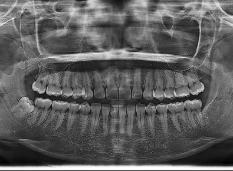
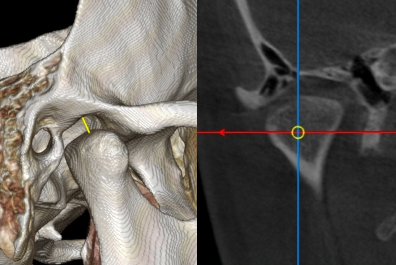
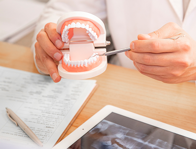
턱관절 치료 방법
구강악안면외과 전문의의 정확한 진단을 바탕으로 턱관절 기능 회복과
통증 완화를 위한 맞춤 치료를 제공합니다.
물리치료, 스플린트, 주사치료 등 다양한 치료 방법으로 증상 개선과 기능 회복을 돕습니다.
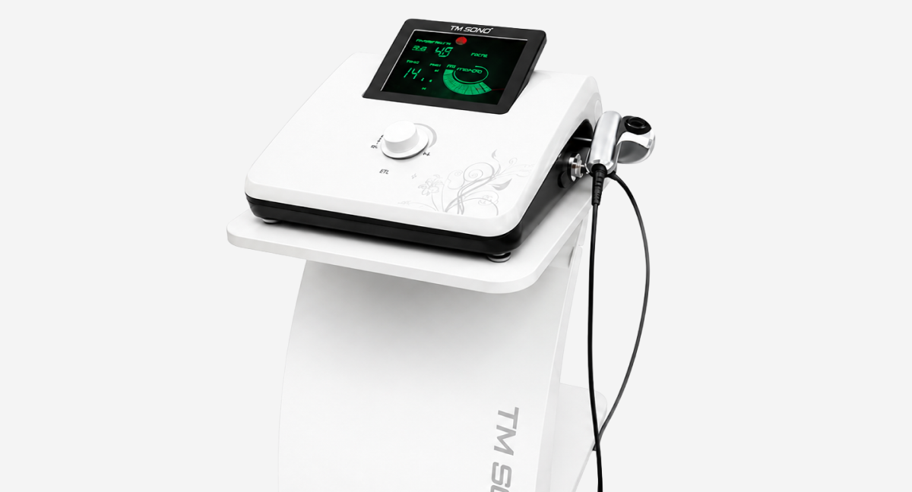
턱관절 물리치료는 턱관절 주변 근육의 긴장과 통증 완화를 돕는 비수술적 치료입니다.
온열치료, 전기자극치료, 초음파치료 등을 통해
혈액순환과 근육 이완을 유도하며, 턱 움직임 개선에 도움을 줄 수 있습니다.
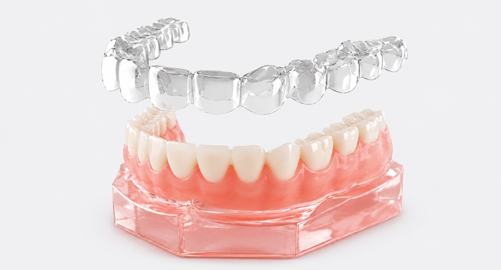
개인의 구강 구조에 맞게 제작된 스플린트를 착용하여 턱관절에 가해지는 부담을 줄이고,
근육 긴장을 완화하여 턱관절의 안정을 유도하는 장치 치료입니다.
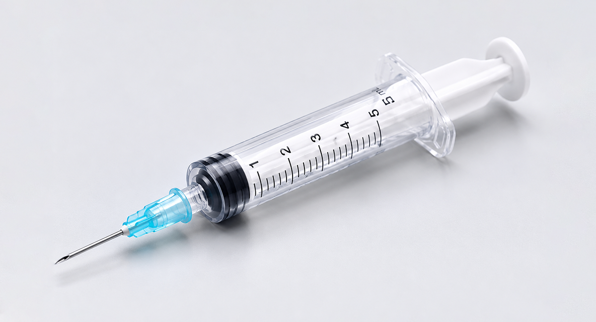
턱관절 질환은 원인과 증상이 매우 다양하기 때문에 환자 상태에 맞는
적절한 주사치료가 중요합니다. 통증 부위, 염증 정도, 근육 긴장 상태 등을 정확히 진단한 후
치료를 진행하며, 증상 완화와 기능 회복에 도움을 줄 수 있습니다.
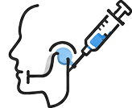
스테로이드 주사
반복적으로 주사하면 부작용이 발생할 수 있기 때문에 정확한 진단이 이루어진 후 전문의 판단에 따라 1~2회 주사가 시행됩니다.
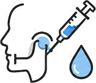
히알루론산 주사
관절액 성분과 동일한 약물로서 반복적으로 투여해도 부작용이 거의 없으며 통증 완화, 관절액 보충 등을 통해 퇴전된 기능을 정상화시킬 수 있는 좋은 약물 입니다.
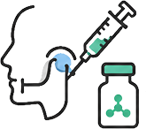
보툴리눔독소 주사
일반인들에게 “보톡스”로 알려져 있는 약물입니다. 근육이완 및 통증완화 효과가 매우 좋습니다. 따라서 이갈이, 이악물기와 같은 구강악습관 교정용으로 많이 사용되며 부작용으로 사각턱을 완화시키는 미용 효과를 얻을 수도 있습니다. 주사 비용은 비급여입니다.
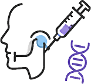
PDRN DNA 주사
상처치유를 촉진시키고, 혈관 및 조직 재생, 소실된 인대의 재생, 염증을 완화시키는 우수한 효과를 발휘합니다. 적절한 종류를 선택하여 주사할 경우 퇴전질환 치료에 도움이 됩니다. 주사 비용은 비급여입니다.
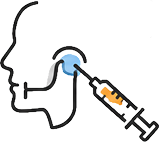
턱관절 봉침치료
포도당, 리도카인 마취제, 주사용 식염수를 적정 비율로 혼합하여 퇴전질환 부위 인대, 건, 근막 부위에 주사함으로써 손상 받은 조직을 재생시키는 매우 유용한 치료입니다. 신의료기술 등재된 시술로서 비급여입니다.
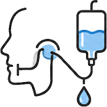
턱관절세정술
턱관절 내부 공간에 바늘을 2개 삽입하여 하트만용액이나 생리식염수를 세척하여 관절강 내부의 염증 물질들을 제거하는 치료입니다. 심한 염증으로 인해 턱관절 통증이 심하거나 입이 잘 안 벌어지는 환자들에게 매우 효과적인 치료법입니다.
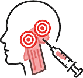
발통점 주사
발통점은 팽팽한 밴드(taut band)를 가진 국소적인 근육 통증이 존재하는 부위로서 이 부위에 주사를 시행하면 턱관절과 안면부 통증을 완화시킬 수 있다.
상담 및 행동요법
턱관절 질환은 방치할수록 만성화될 수 있으므로, 불편함이 느껴진다면
정확한 진단과 적절한 치료를 받는 것이 중요합니다.
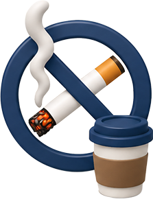
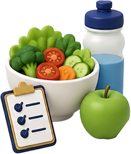
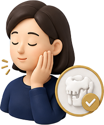
JAIN DENTAL CLINIC
자인치과의원 둘러보기
JAIN DENTAL CLINIC
진료안내 · 오시는길
상담 및 예약
010-8111-6237
방문 전 전화 예약 주시면 기다리는 불편함을 최소화하여 진료받으실 수 있습니다.
진료시간
- 월/수/금 09:00 ~ 18:00
- 화/목(야간진료) 09:00 ~ 20:00
- 토/일 09:00 ~ 13:00
- 점심시간 12:30 ~ 14:00
오시는 길
전북특별자치도 전주시 덕진구 백제대로 757 2층 자인치과
명주골네거리 (홈플러스 사거리) 대자인병원 맞은편